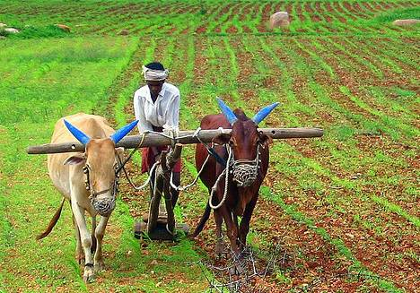
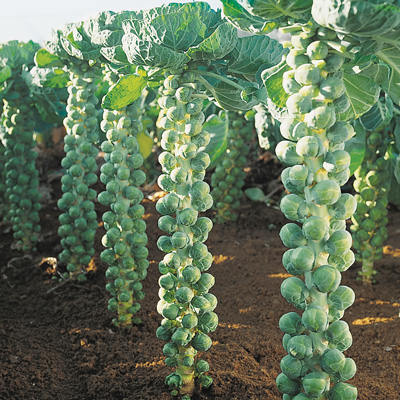

Agriculture
Agriculture plays an important role in the Indian Economy. It is the principal source of livelihood for majority of the population in the country, provides bulk of wage goods required by non-agriculture sectors and most of the raw materials for the industries sector. Due to the dominant position of Agriculture in the Indian economy, collection and maintenance of Agricultural statistics assumes special importance, particularly, in respect of statistics relating to the agricultural holdings.
Fielding |
In agriculture, a field is an area of land, enclosed or otherwise, used for agricultural purposes such as cultivating crops
or as a paddock or other enclosure for livestock. A field may also be an area left to lie fallow or as arable land.
Many farms have a field border, usually composed of a strip of shrubs and vegetation, used to provide food and cover
necessary for the survival of wildlife. Specific foods include cereals (grains), vegetables, fruits, oils, meats and spices.
Fibers include cotton, wool, hemp, silk and flax. Raw materials include lumber and bamboo. Other useful materials are produced
by plants, such as resins, dyes, drugs, perfumes, biofuels and ornamental products such as cut flowers and nursery plants. Over
one third of the world's workers are employed in agriculture, second only to the services' sector, although the percentages of
agricultural workers in developed countries has decreased significantly over the past several centuries.
|
|---|
Cultivation
Cropping systems vary among farms depending on the available resources and constraints;
geography and climate of the farm; government
policy; economic, social and political pressures; and the philosophy and culture of the farmer.
Shifting cultivation (or slash and burn) is a system in which forests are burnt, releasing nutrients to support cultivation of annual
and then perennial crops for a period of several years.[61] Then the plot is left fallow to regrow forest, and the farmer moves to a new
plot, returning after many more years (10 – 20). This fallow period is shortened if population density grows, requiring the input of nutrients
(fertilizer or manure) and some manual pest control. Annual cultivation is the next phase of intensity in which there is no fallow period.
This requires even greater nutrient and pest control inputs.
|
 |
|---|
Live Stock
|
Animals, including horses, mules, oxen, water buffalo, camels, llamas, alpacas, donkeys, and dogs, are often used to help cultivate fields, harvest crops, wrangle other animals, and transport farm products to buyers. Animal husbandry not only refers to the breeding and raising of animals for meat or to harvest animal products (like milk, eggs, or wool) on a conti nual basis, but also to the breeding and care of species for work and companionship. Livestock production systems can be defined based on feed source, as grassland-based, mixed, and landless. As of 2010, 30% of Earth's ice- and water-free area was used for producing livestock, with the sector employing approximately 1.3 billion people. Between the 1960s and the 2000s, there was a significant increase in livestock production, both by numbers and by carcass weight, especially among beef, pigs and chickens, the latter of which had production increased by almost a factor of 10. |
|---|